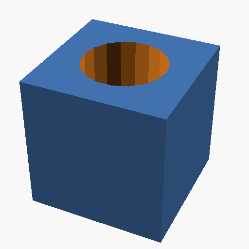

Basic Shapes: Cube and Sphere
LuaSCAD
require "luascad"
local cube = cube{size={1, 2, 3}}
local sphere = sphere{r = 2}
sphere:translate(5, 0, 0)
local model = cube + sphere
model:export("temp/model.scad")OpenSCAD
cube([1,2,3]);
translate([5,0,0]) sphere(r = 2);
A simple cube combined with a sphere translated along the X-axis.
Boolean Operations: Difference
LuaSCAD
require "luascad"
local cube = cube{size={10, 10, 10}, center=true}
local cylinder = cylinder{h=20, r=3, center=true}
-- Create a hole through the cube
local model = cube - cylinder
model:export("temp/difference_model.scad")OpenSCAD
difference() {
cube([10, 10, 10], center=true);
cylinder(h=20, r=3, center=true);
}

A cube with a cylindrical hole cut through it using the difference operation.
Complex Shape: Gear
LuaSCAD
require "luascad"
function gear(teeth, height, radius)
local gear = cad()
local base = cylinder{h=height, r=radius*0.7}
-- Create teeth
for i = 1, teeth do
local angle = (i-1) * (360/teeth)
local tooth = cube{size={radius*0.3, radius*0.2, height}}
tooth:translate(radius*0.7, 0, 0)
tooth:rotate(0, 0, 0, 0, 0, angle)
gear = gear + tooth
end
return base + gear
end
local my_gear = gear(8, 5, 10)
my_gear:export("temp/gear_model.scad")OpenSCAD
module gear(teeth, height, radius) {
union() {
cylinder(h=height, r=radius*0.7);
// Create teeth
for (i = [0:teeth-1]) {
angle = i * (360/teeth);
rotate([0, 0, angle])
translate([radius*0.7, 0, 0])
cube([radius*0.3, radius*0.2, height]);
}
}
}
gear(8, 5, 10);
A simple gear with customizable teeth count, height, and radius.
Rounded Shapes
LuaSCAD
require "luascad"
-- Create a rounded rectangle
local base = cad.rectround{
size = {20, 10},
radius = 2
}
-- Extrude it to create a 3D shape
base:linearextrude(5)
base:export("temp/rounded_rect.scad")OpenSCAD
// Create a rounded rectangle
module rounded_rect(size, radius) {
hull() {
translate([radius, radius, 0])
circle(r = radius);
translate([size[0] - radius, radius, 0])
circle(r = radius);
translate([radius, size[1] - radius, 0])
circle(r = radius);
translate([size[0] - radius, size[1] - radius, 0])
circle(r = radius);
}
}
// Extrude it to create a 3D shape
linear_extrude(height = 5)
rounded_rect([20, 10], 2);
A 3D shape created by extruding a 2D rounded rectangle.
Parametric Box
LuaSCAD
require "luascad"
function create_box(width, depth, height, thickness)
-- Outer shell
local outer = cube{size={width, depth, height}}
-- Inner cavity
local inner = cube{
size={
width - thickness*2,
depth - thickness*2,
height - thickness
}
}
inner:translate(thickness, thickness, thickness)
-- Create box by subtracting inner from outer
return outer - inner
end
local box = create_box(30, 20, 15, 2)
box:export("temp/parametric_box.scad")OpenSCAD
module create_box(width, depth, height, thickness) {
difference() {
// Outer shell
cube([width, depth, height]);
// Inner cavity
translate([thickness, thickness, thickness])
cube([
width - thickness*2,
depth - thickness*2,
height - thickness
]);
}
}
create_box(30, 20, 15, 2);
A customizable box with parametric dimensions and wall thickness.